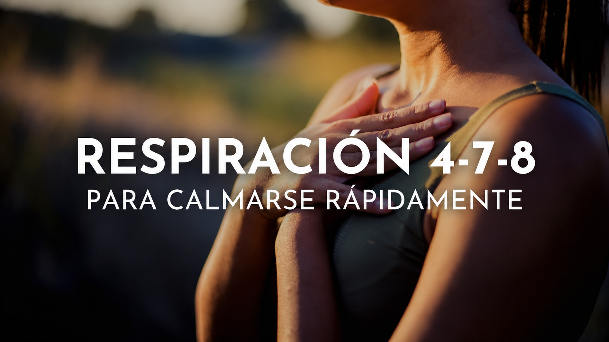

Respiración Controlada (4-7-8)
Inhala profundamente por la nariz durante 4 segundos, mantén el aire durante 7 segundos y exhala lentamente por la boca durante 8 segundos. Repite cuatro veces para reducir el ritmo cardíaco.
Práctica y Bienestar
Herramientas prácticas basadas en la respiración, el arte y la concentración para calmar la mente y recuperar el control en momentos de ansiedad.

Inhala profundamente por la nariz durante 4 segundos, mantén el aire durante 7 segundos y exhala lentamente por la boca durante 8 segundos. Repite cuatro veces para reducir el ritmo cardíaco.
Saca los pensamientos de tu cabeza pasándolos al papel sin censura. Escribir lo que te preocupa ayuda a externalizar los miedos y a ver los problemas desde una perspectiva más objetiva y manejable.
Colorear formas geométricas o trazar líneas libres desvía la atención del cerebro de los pensamientos intrusivos. La concentración en los trazos y colores actúa como una meditación activa.
Cierra los ojos e imagina un lugar seguro y sereno (un bosque tranquilo, una playa solitaria). Concéntrate en los detalles: los sonidos, los olores y la temperatura para engañar al estrés y relajar el cuerpo.
Responde las siguientes dinámicas para repasar lo aprendido sobre la ansiedad y mide tus aciertos.
1. "La ansiedad solo les pasa a las personas débiles"
2. "La ansiedad es una respuesta normal del cuerpo ante el peligro"
1. "La ansiedad es una ________ normal del cuerpo."
2. "Para calmar el cuerpo, se recomienda respirar ________ y lento."
Identifica si cada situación corresponde a una manifestación de ansiedad o a otra causa.
1. Te sudan las manos antes de exponer.
2. Te duele la muela.
3. Sientes que el corazón te late rápido antes de un partido.
4. Tienes hambre después de no comer.
5. Te cuesta dormir porque piensas mucho en mañana.
6. Te pica la nariz por alergia.
¿Necesitas más apoyo?
Los ejercicios diarios son excelentes aliados, pero recuerda que contar con ayuda psicológica marca la diferencia en el manejo de la ansiedad.